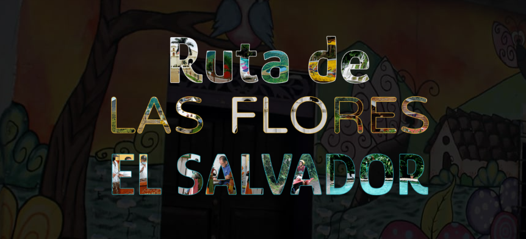

Tarifa:
Al ser un ruta de varios lugares y no un sitio único con precios de entrada, cada persona que quiera recorrer este destino turístico, debera de ser conciente de que podrá pasar mas de un dia recorriendolo, y asi mismo teniendo que pagar por alojamiento, comida, bebida, y cualquier otra necesidad
Transporte:
Aunque bien llegar aqui con tu propio vehículo, también existen rutas de buses los cuales pueden ayudar a movilizarse en la ruta: En Sonsonate tomando el bus Ruta 205. Desde aquí, deberás tomar un segundo bus, Ruta 53 D a Nahuizalco o el bus Ruta 249 a Juayúa y Concepción de Ataco.
☼ Tarifa promedio en Autobuses locales: USD $0.25 a $1.00
☼ Tarifa promedio microbuses Interdepartamental: $0.75 a $1.75

Horario único
al ser un recorrido, cada establesimiento tiene un horario propio aunque normalmente, los establecimientos de comida estan desde las 6am hasta las 9pm, de igual forma se recomienda llegar temprano a reservar alojamiento